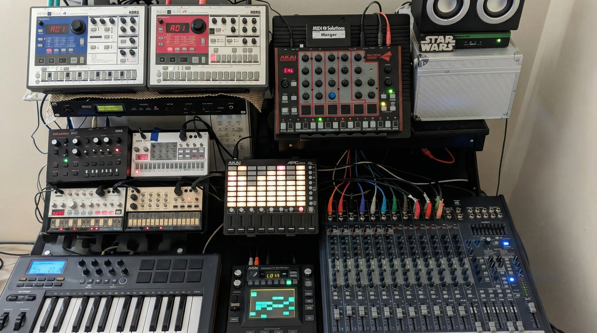
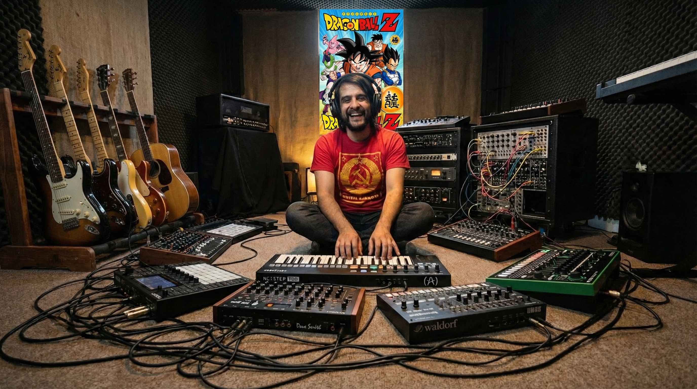
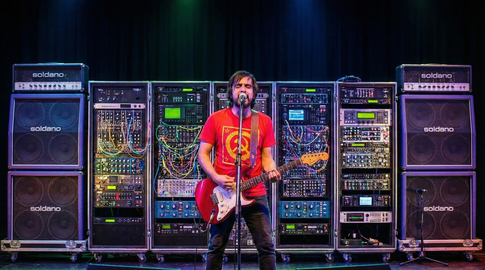

Crafting sonic landscapes where analog warmth meets digital precision. From driving techno beats to soaring synthwave melodies and face-melting guitar riffs.
// About
Two decades of musical evolution, from six strings to synthesizers

My journey began at 13 with a guitar in hand, playing rock and folkloric music that shaped my understanding of melody and emotion. Over the years, I've evolved through punk energy, hard rock power, and glam metal theatrics—each genre adding layers to my musical DNA.
Today, I channel that experience into electronic music production, creating Techno, House, Trance, and Synthwave that carries the soul of a guitarist. Using hardware synthesizers, drum machines, and custom sound design, I craft tracks that move both body and spirit.
As part of Nahuatl Consciousness, I explore the intersection of indigenous themes, consciousness expansion, and electronic soundscapes—creating minimal techno and trance that transcends the ordinary.
// Discography
Explore the sonic journey across genres and dimensions
// Studio Gear
Hardware-driven sound design for authentic electronic music
Analog and digital synthesis for rich, evolving textures
Punchy beats and intricate rhythms
From clean tones to heavy distortion
Sound shaping and spatial design
DIY electronics and sound tools
Precision listening and capture
Precision listening and capture
// Visual
Watch the music come to life
Hardware-only live performance featuring Akai Force and analog synths

Behind the scenes: Creating retro-futuristic soundscapes

Blending rock guitar with electronic production
// Connect
Bookings, collaborations, or just say hello
Available for live performances, DJ sets, studio collaborations, remix work, and custom music production. Let's create something extraordinary together.